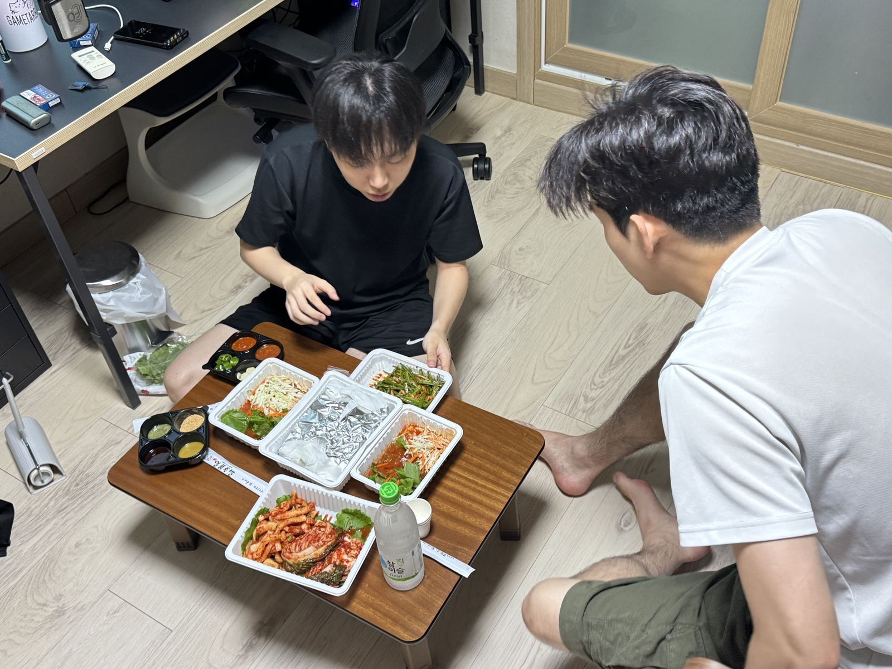

Weekly Drinking Promotion
Association (WDPA)
입력 : 2026년 8월 11일

매주술권장협회 핵심 운영진 수지구청 회동 현장 / 사진=WDPA
매주술권장협회 핵심 운영진이 11일 경기 용인시 수지구청역 일대에서 긴급 회동을 갖고, 미국 텍사스 연구 일정으로 출국을 앞둔 김성민 해외지부 운영총괄의 남은 국내 체류 기간을 보다 효율적으로 활용하기 위한 방안을 논의했다.
이번 회동은 허근영 전무이사의 갑작스러운 저녁 식사 제안으로 성사됐다.
협회 관계자에 따르면 허 전무이사가 이날 오후 김성민 해외지부 운영총괄과 최민규 상근부회장에게 저녁 회동을 제안했고, 두 사람이 이에 응하면서 핵심 운영진 3인은 별도의 사전 의전 절차 없이 수지구청역으로 집결했다.
이들이 첫 공식 일정 장소로 선택한 곳은 인근 육류 전문 레스토랑 ‘고진사’였다.
고진사는 평소 돼지껍데기의 탄력과 풍미에 상당히 엄격한 기준을 적용하는 것으로 알려진 허근영 전무이사로부터 ‘공식 껍데기 맛집’ 인증을 획득한 곳이다. 협회 내부에서는 허 전무이사의 해당 인증이 별도의 심사위원회나 평가표 없이 개인의 미각만으로 이뤄지고 있음에도 상당한 신뢰도를 확보하고 있는 것으로 알려졌다.
세 사람은 엄선된 돼지고기를 고온 화력으로 구워낸 메인 육류 메뉴와 특유의 탄력감을 극대화한 돼지껍데기, 대한민국 서민 주류문화의 핵심 액체자산인 참이슬을 테이블에 배치하며 만찬을 시작했다.
특히 별다른 사전 정보 없이 식당을 찾은 최민규 상근부회장은 예상치를 웃도는 고기의 육질과 껍데기의 완성도에 높은 만족감을 나타냈다.
최 상근부회장은 적절한 지방층과 육즙을 유지한 고기에 이어 겉면의 고소한 풍미와 내부의 쫀득한 탄력성을 동시에 확보한 껍데기를 맛본 뒤 헤드셰프의 조리 역량에 극찬을 보낸 것으로 전해졌다.
한 참석자는 “처음에는 허 전무이사가 좋아하는 동네 고깃집 정도로 생각했다”며 “껍데기가 투입된 이후에는 공식 인증에 대한 의구심이 상당 부분 해소됐다”고 말했다.
이날 만찬의 주요 의제는 김성민 해외지부 운영총괄의 텍사스 출국이었다.
김 총괄은 향후 미국 텍사스 현지 연구 일정을 수행하기 위해 한국을 떠날 예정으로, 출국까지 남은 시간이 많지 않은 상황이다.
이에 허 전무이사와 최 상근부회장은 남은 국내 체류 기간을 단순히 소진해서는 안 된다는 데 뜻을 모으고, 김 총괄이 출국하기 전까지 함께할 수 있는 일정과 활동을 놓고 다양한 의견을 교환했다.
특히 단순한 음주 회합을 반복하기보다는 향후 텍사스 현지에서도 회상 가능한 수준의 추억 자산을 최대한 확보해야 한다는 데 상당한 공감대가 형성된 것으로 알려졌다.
평소 협회 운영진 회합에서는 참이슬을 중심으로 한 적극적인 음주 활동이 이어져 왔지만 이날은 평일이라는 현실적 여건을 감안해 이례적으로 절제된 주류 운영 기조가 유지됐다.
세 사람은 소주의 절대 섭취량을 줄이는 대신 최근 근황과 출국 준비, 향후 계획 등을 놓고 상당한 시간 동안 대화를 이어갔다.
협회 관계자는 “테이블 위 주류 회전율은 평소 대비 눈에 띄게 감소했다”며 “다만 대화량은 반대로 크게 늘면서 질적 중심의 회합이 진행됐다”고 평가했다.
육류 전문 레스토랑에서의 만찬을 마친 세 사람은 곧바로 귀가하지 않고 인근 프라이빗 보컬 퍼포먼스 스튜디오로 이동해 2차 문화예술 교류 프로그램을 진행했다.
일반적으로는 ‘노래방’으로 불리는 시설이다.
현장에서는 각자 약 3곡의 개인 무대를 배정받았으며, 일정이 진행될수록 선곡 난도가 상승하면서 자연스럽게 비공식 고음 경연으로 발전했다.
목격자들에 따르면 후렴구 진입과 동시에 참가자들의 성량과 음역이 빠르게 상승했고, 일부 무대에서는 원곡 가수의 최고음에 굳이 정면으로 도전해야 했는지를 두고 내부적으로 의문이 제기된 것으로 알려졌다.
그러나 일정 막바지에 접어들면서 선곡 방향은 예상치 못하게 일본으로 급선회했다.
곡명과 가사의 정확한 의미를 즉시 파악하기 어려운 일본 음악이 연이어 선곡되면서 현장은 순식간에 동북아 대중음악 문화교류 프로그램으로 전환됐다.
김성민 해외지부 운영총괄과 허근영 전무이사는 낯선 언어 환경에서도 감미로운 보이스와 안정적인 음정 운용을 선보이며 공연을 이어갔고, 최민규 상근부회장은 두 사람의 무대를 감상하며 예정에 없던 일본 대중음악 청음 프로그램을 소화한 것으로 전해졌다.
한 현장 관계자는 “후반부에는 정확히 무슨 노래를 부르고 있는지 파악하기 어려웠다”면서도 “두 사람 목소리가 좋아서 해당 정보의 필요성 자체가 점차 사라졌다”고 말했다.
세 사람은 문화예술 프로그램을 끝으로 이날 일정을 마무리한 뒤 각각 귀가했다.
한편 협회 내부에서는 김성민 해외지부 운영총괄의 텍사스 파견 시점이 가까워짐에 따라 남은 국내 일정을 집중적으로 운용하기 위한 비상 계획을 내부적으로 ‘작전명 TEXAS-1’으로 명명하는 방안이 거론되고 있는 것으로 알려졌다.
협회 관계자는 “현재까지 공식 발령 단계는 아니다”라면서도 “출국이 임박할 경우 단계별 대응 수위가 상향될 가능성을 배제할 수 없다”고 밝혔다.